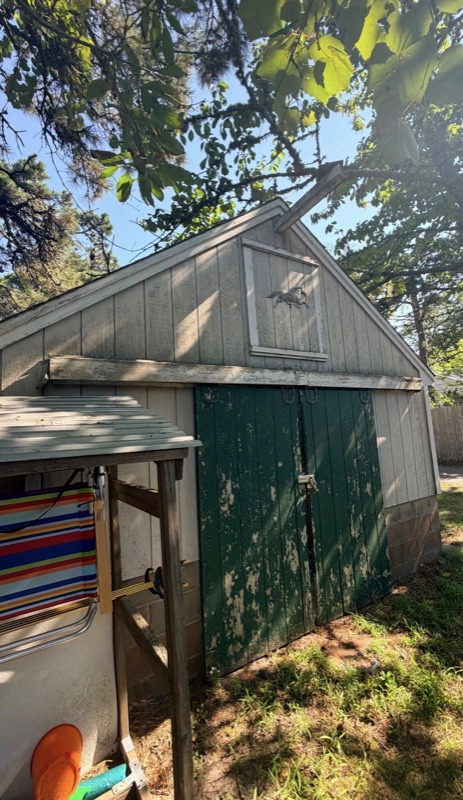
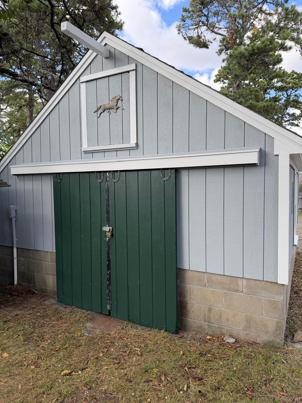
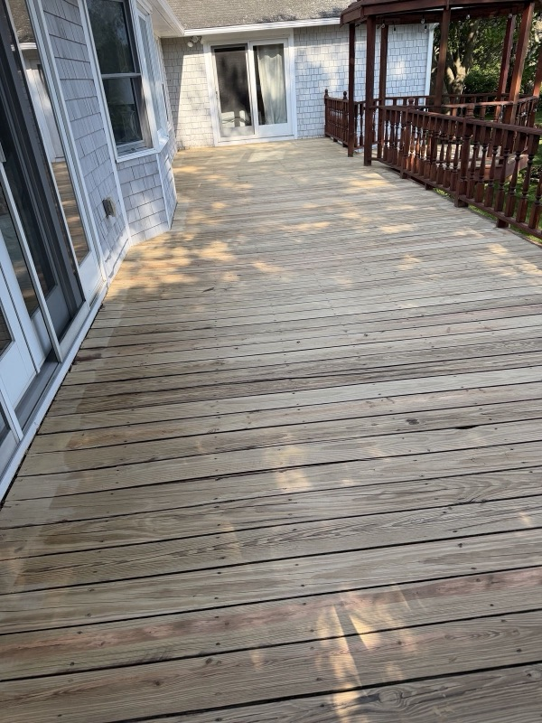
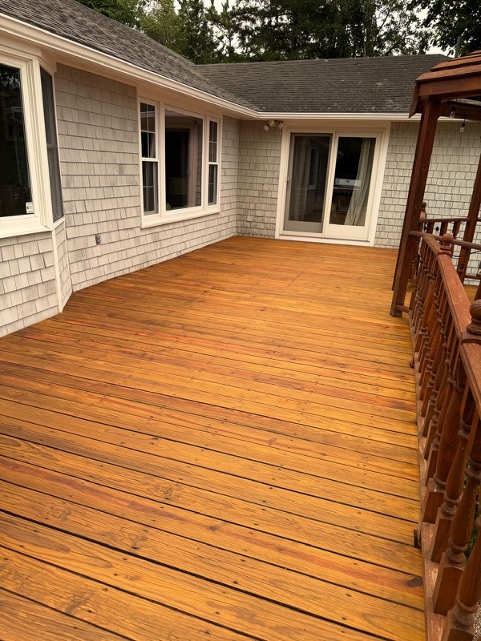

Dicas e perguntas do job
Não é aula. É o que eu faço no job, com foto. Concorde ou discorde: os dois ajudam.
Dica de colega
Foto do job e o que eu faço naquela situação. Do jeito que se fala na obra.
Pode discordar
Cada pintor tem o seu jeito. Se você faz diferente e dá certo, manda.
Vitrine pra você
Publique o seu projeto no Mural e mostre a sua empresa. De graça.
Dicas em foto
As situações que mais aparecem no dia a dia. Toque na foto pra ver grande.
- Trim podre4 fotos
- Troca de madeira2 fotos, 1 a escolher
- Casa pintada4 fotos
- Erros comuns3 fotos
- Projetos de pintores2 fotos, 1 a escolher
- Antes e depois2 jobs
Trim podre
Troca de madeira
Casa pintada
Erros comuns
Projetos de pintores
Antes e depois
Arraste a alça. O resultado aparece. O trabalho de verdade foi o preparo.


AntesDepoisGalpão
Porta descascando e madeira cinza. Se pular a raspagem, a tinta nova solta junto.


AntesDepoisDeck
Lavado e seco antes do stain. Madeira molhada não segura nada. Uma demão bem feita vale mais que duas com pressa.
Mande sua pergunta
Travou num job? Pergunta. As dúvidas que mais aparecem viram dica aqui, com foto.
Perguntas frequentes
É pago?
Não. Ler as dicas, mandar pergunta e aparecer no Mural não custa nada.
Não sou pintor. Serve pra mim?
Serve. O canal nasceu na pintura, mas preço, cliente americano, papelada e inverno parado são dores de todo profissional que trabalha com casa.
Preciso falar inglês?
Não. Tudo é em português. As palavras que você ouve no job, como estimate, trim e crew, aparecem em inglês e explicadas.
Vocês respondem toda pergunta?
O Roberto lê todas. As que mais aparecem viram dica aqui no site, com foto.
Por que eu discordaria de uma dica?
Porque cada pintor tem o seu jeito. Se você faz diferente e dá certo, manda. A dica boa pode ser a sua.
Vocês abrem a LLC pra mim?
Não. O canal fala em linguagem simples do que existe e do que perguntar. Empresa, seguro e imposto são com um contador ou profissional habilitado no seu estado.